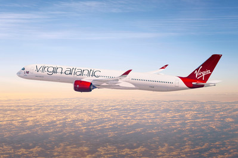

Tools Used
Initiated By
- Virgin Atlantic Airways
Partners
- University of Chicago (UC)
- London School of Economics (LSE)
Results
- Captains in the “control” group decreased their fuel use significantly
- Captains in the three treatment groups did even better than those in the control group, but with smaller additional gains
- The two groups that received targets performed the best of all
Download this Case Study (PDF)
For More Information
- http://www.virginatlantic.com/content/dam/vaa/documents/footer/sustainability/VAA_Captains_Study_Summary_FINAL_170616.pdf
- http://www.nber.org/papers/w22316
- www.virginatlantic.com/changeisintheair
- http://www.signol.io/company/press-and-publicity
- http://irishtechnews.ie/behavioural-economics-improves-fuel-efficiency/
Landmark Case Study
Virgin Atlantic’s Airline Captains Improve Fuel Efficiency
Virgin Atlantic Airways (VAA) conducted an eight-month pilot in 2014 to test the potential roles and impacts of monitoring, performance information, personal targets, and prosocial incentives on the fuel-use behavior of their captains. All 335 of VAA’s captains were part of the pilot, and they were randomly assigned to four separate treatment groups. Since the pilot, the approach has become business as usual at VAA, and the technology was commercialized through Signol and updated to a web-app and email rather than post. Designated a Landmark case study in 2021.
Background
- VAA’s pilots are highly skilled and well-compensated professionals, who have a great deal of individual control over precisely how much fuel they use in flight.
- Fuel represents roughly 1/3 of an airline’s operating costs.
Getting Informed
In preparation for this study, the captains’ managers, union representatives and a group of experienced captains were consulted. They also helped design the interventions and rollout plans.
Prioritizing Audiences
This program was designed for airline captains (the captain is the senior pilot in an aircraft.)
Delivering the Program
Image courtesy of VAA
VAA had two mutually reinforcing business drivers: 1) reducing costs and (2) improving fuel and carbon efficiency. The later was the number one environmental priority of VAA’s Change is in the Air (CIITA) sustainability program.
For this pilot study, the Fuel Efficiency and Sustainability teams at VAA partnered with academics from the University of Chicago (UC) and London School of Economics (LSE).
The experiment took place during an eight-month period in 2014. All 335 of VAA’s captains took part, and they were randomly assigned to the following four separate treatment groups (Building Motivation, Engagement and Habits Over Time; Feedback; Norm Appeals; Personalized, Credible, Empowering Communication; Prompts)
- Control Group: At minimum, in what is dubbed the “control” group, the captains were informed that a study of their fuel use was happening. Then, they received no further information about it.
- Information: In one of the experimental cases, each captain was given a monthly, personalized feedback report on the percentage of flights the previous month for which the fuel conserving behaviors were performed.
- Information + Targets: In this group, the captains received these feedback reports and an explicit personalized goal for reducing fuel use. These goals were set at 25% above their pre-experimental baseline levels for performing each behavior, capped at 90%. If at least two of the three targets were met, the captains were recognized with an injunctive statement (“Well Done!”) and encouraged to continue to fly efficiently the following month. If less than two targets were met, the captains were encouraged to fly more efficiently to reach their targets.
- Prosocial (As Above + Charitable Donation): This group was similar to the previous group but, in addition, charitable donations were made on behalf of the captains if they met their goals — 10 pounds per month for hitting targets in each of the three fuel conservation areas. The captains could choose from five different charities. This the researchers dubbed the “prosocial group,” based on the idea that making pilots feel altruistic would influence their fuel saving behavior
The following table summarizes the key barriers to action and how each was addressed.
|
Barrier |
How it was addressed |
|
Concern about safety |
· It was expected that, due to safety concern, captains would not always be able to meet their in-flight and post-flight targets. |
|
Lack of attention to fuel conservation behaviors |
· This experiment tested three different approaches for countering this. |
Financing the Program
The authors of the study claim that this project provided the lowest published marginal abatement cost per ton of CO2, at negative $250 (i.e., $250 savings per US ton abated).
Measuring Achievements
This pilot study involved a four-arm randomized controlled trial (RCT), followed by an anonymized satisfaction survey.
Analysis involved 110,000 data points from over 40,000 unique flights before, during, and after the pilot, over a 27-month period for the entire population of 335 captains eligible to fly. This included 13 months of pre-experiment data (baseline), 8 months of intervention data, and six months of post-intervention data. Regression analysis controlled for individual- and flight-level variables such as weather, airport, day of the week, and aircraft flown.
Measures
1. Pre-Fight (Fuel Load) Behavior: This behavior was considered successful if the captain’s final fuel load was within 200 kg of the “correct” amount of fuel as dictated by a standard calculation. According to VAA, captains should have been able to have 100% success.
2. In-flight (Efficient Flight) Behaviors: These behaviors included requesting and executing optimal altitudes and shortcuts from air traffic control, maintaining ideal speeds, optimally adjusting to enroute weather updates, and ensuring efficient aerodynamic arrangements with respect to flap settings as well as takeoff and landing gear. The Efficient Flight targets considered all of these and were set so that captains could achieve the targets while keeping safety the priority. Efficient Flight behaviors were considered successful if the captain did not exceed the target. It was expected that, due to safety concern, captains would not always be able to meet these targets.

Image courtesy of VAA
3. Post-flight (Efficient Taxi) Behavior: This behavior was considered successful if the captain shut down at least on engine during taxi-in. It was expected that, due to safety concern, captains would not always be able to meet this target.
Analysis
The analysis made two simultaneous comparisons:
- Pre-intervention period versus intervention period (within-captain comparison)
- Control group versus treatment groups (between-captain comparison).
These two comparisons provide a standard ‘difference-in-differences’ estimation.
Feedback
This entire case study focuses on the use of various forms of feedback.
Results
Including the control group, the behavioral changes resulted in
- Over 7,700 metric tons of fuel saved over the eight-month experimental period
- US$ 6.1 million saved in fuel costs (in 2014 prices)
- 24,500 metric tons of CO2 abated.
The control group increased its use of Efficient Flight and Efficient Taxi behaviors by nearly 50% relative to the pre-experimental period and maintained this change in behavior during the six months after the experiment While their reaction to being monitored may have led to their increased performance of the desired behaviors, it must have been other factors that led to maintenance of the behaviors. This is a great illustration of the Hawthorne Effect, where people change their behaviours because they know they are being observed. Captains in the three treatment groups did even better than those in the control group, but with smaller additional gains. The two groups that received targets performed the best of all.
- Pre-Fight (Fuel Load) Behavior: Compared with post-flight behaviors, this behavior took longer for the captains to improve, and the largest impacts occurred mid-project. The monthly feedback reports on their own had no impact relative to the control group; only the captains who also received personalized targets showed a relative improvement. Post-implementation, the relative improvements in the treatment groups disappeared. While this behavior did not further increase after the experiment (in contrast to the other two behavior groupings below), it did not decay during the six months after the end of the experiment.
- In-flight (Efficient Flight) Behaviors: Compared with post-flight behaviors, these behaviors took longer for the captains to improve, and the largest impacts occurred mid-project. The monthly feedback reports on their own had no impact relative to the control group; only the captains who also received personalized targets showed a relative improvement. Post-implementation, the relative improvements in the treatment groups disappeared. Interestingly, the control group increased its adoption of the behaviors from 31.1% at baseline to 47.6% during the experiment, to 54.8% during the six months after the end of the experiment (Hawthorne effect).
- Post-flight (Efficient Taxi) Behaviors: These behaviours are the easiest to adopt. The captains quickly adopted them and maintained them throughout the pilot, with no indication of treatment effect delays. Even the monthly feedback group showed improvements relative to the control group. After implementation, relative improvements in the treatment groups remained at an attenuated level. Interestingly, the control group increased its adoption of the behaviors from 35.2% at baseline to 50.7% during the experiment, to 54.7% during the six months after the end of the experiment.
Captains in the “prosocial” group didn’t perform any better overall than the “Information + Targets” group. However, they reported the highest level of job satisfaction after the study period had ended (6.5% more than the control group.) Each additional target met (out of 24 in all) increased job satisfaction by 1%. The Information group and the Information + Targets group increased job satisfaction by about 4% more than the control group.
Notes
- This study is innovative in tracking the separate impacts of basic information, personalized targets, and prosocial incentives on precise and well-defined measures of workplace performance in a high stake setting among well-salaried, experienced, and unionized employees. Additionally, unlike many studies, it does not comprise information asymmetry or team production externalities (i.e., there is no undetected shirking), and therefore there is potential to align individual self-interest with firm efficiency.
- This is a great illustration of the Hawthorne Effect.
- This pilot study included only captains, and only three behavior metrics. Expanding the approach to include all pilots (not just captains) and more behaviors could yield even more savings.
- Given the rate of return and positive implementation experience, Signol (https://www.signol.io/) was created by some members of the research team, to bring the approach to a range of industries with “skilled operators”. For example, in addition to the airline industry, Signol targeted maritime shipping, and behaviors such as trim and draft optimization, speed optimization, port turnaround time, autopilot improvement, and route optimization. It also targeted road transport drivers and behaviors such as including engine idling, steady speed, excessive speeding, harsh braking, and acceleration.
- As of 2021, VAA was working with Signol to roll the approach out as “business as usual” and continued to reap the benefits year on year. Since the initial trial, the technology was updated to a web-app and email rather than post.
- Scale of savings: As of 2021, Signol’s promotion materials promised fuel savings of at least 1% to 2% and up to 4%.
Landmark Designation
The program described in this case study was designated in 2021.
Designation as a Landmark (best practice) case study through our peer selection process recognizes programs and social marketing approaches considered to be among the most successful in the world. They are nominated both by our peer-selection panels and by Tools of Change staff and are then scored by the selection panels based on impact, innovation, replicability and adaptability.
The panel that designated this program consisted of:
- Aaron Gaul from UrbanTrans
- Nathalie Lapointe, Federation of Canadian Municipalities
- David Levinger, The Mobility Education Foundation
- Lisa Kay Schweyer, Traffic21 Institute and Mobility21 National University Transportation Center
- Jessica Roberts, Alta Planning + Design
- Phil Winters, CUTR and the University of South Florida.